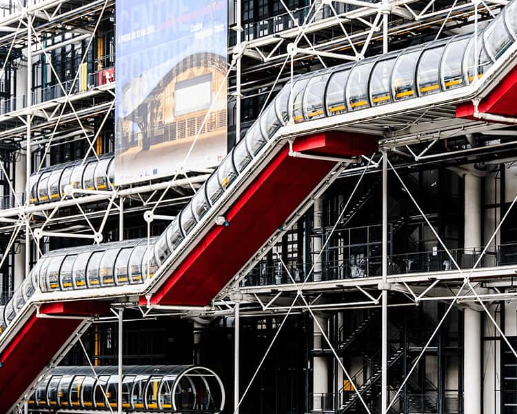
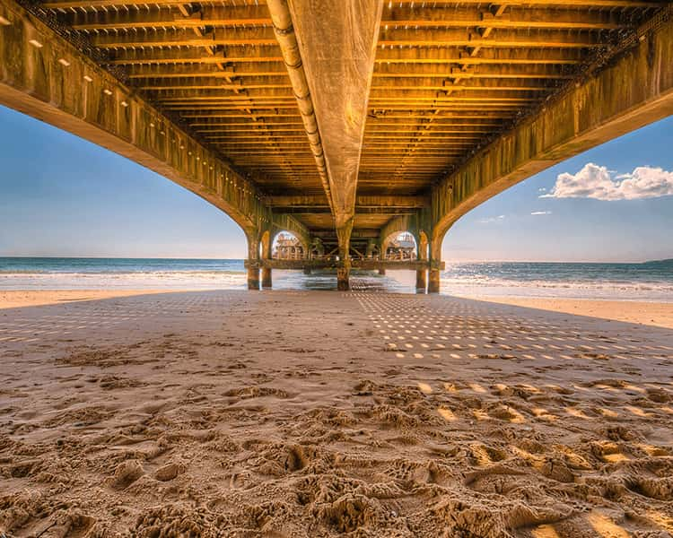

Aucun article ne correspond. Voir tous les thèmes.

Permis de construire au Maroc : étapes, dossier Rokhas et délais
De la note de renseignements à l'affichage sur le chantier : les étapes du permis de construire, les pièces du dossier Rokhas et ce qui fait perdre des semaines.
Lire l'article →
Prix d'un bureau d'études techniques au Maroc : honoraires et devis
Pourcentage des travaux ou forfait, ce qui fait varier le prix, ce qu'un devis sérieux doit contenir : tout pour budgéter les études techniques de votre projet.
Lire l'article →
Prix de construction au m² au Maroc en 2026 : gros œuvre et finitions
Gros œuvre, finitions, clé en main : les prix au m² constatés au Maroc en 2026, un exemple chiffré et les dépenses à ne pas oublier dans votre budget.
Lire l'article →
Permis d'habiter et certificat de conformité au Maroc : la procédure
Sans permis d'habiter, une maison neuve ne peut être ni occupée légalement, ni raccordée durablement, ni vendue sereinement. Voici comment l'obtenir sans mauvaise surprise.
Lire l'article →
Bureau de contrôle au Maroc : rôle et quand il devient obligatoire
Le bureau de contrôle ne conçoit pas le bâtiment : il vérifie, pour le compte du maître d'ouvrage et de l'assureur, que la conception et l'exécution ne présentent pas de risque technique.
Lire l'article →
Garantie décennale au Maroc : article 769 du DOC et assurance RCD
Au Maroc, la responsabilité décennale existe depuis le Dahir des obligations et contrats, mais son champ est plus étroit qu'en France. Ce qu'elle couvre, qui elle vise et comment se protéger.
Lire l'article →
Réception des travaux et réserves : la procédure pas à pas
La réception est l'acte par lequel vous acceptez l'ouvrage. Ce que vous ne signalez pas ce jour-là devient beaucoup plus difficile à faire reprendre ensuite.
Lire l'article →
Contrat avec l'entreprise de construction : les clauses essentielles
La plupart des conflits de chantier viennent d'un contrat trop court. Voici les clauses à exiger avant de confier la construction de votre maison à une entreprise.
Lire l'article →
Plans de récolement et DOE : le dossier à exiger en fin de chantier
Dans cinq ans, quand une fuite apparaîtra sous le carrelage ou qu'un disjoncteur sautera, ce dossier vous fera gagner des jours de recherche et beaucoup d'argent.
Lire l'article →
Suivi de chantier par le bureau d'études : quelles visites prévoir
Un plan parfait ne sert à rien si le chantier ne le respecte pas. Le suivi du bureau d'études consiste à être présent aux moments où une erreur devient invisible.
Lire l'article →
Travaux de rénovation au Maroc : faut-il une autorisation ?
Refaire une cuisine n'a rien à voir avec ouvrir un mur porteur ou fermer une terrasse. Le niveau d'autorisation dépend de ce que les travaux modifient.
Lire l'article →
Cahier des charges (CPS) d'une construction : contenu et utilité
Sans cahier des charges, chaque entreprise chiffre un bâtiment différent et vous ne pouvez ni comparer les offres, ni exiger la qualité promise.
Lire l'article →
Architecte obligatoire au Maroc ? Lois 12-90 et 016-89
Pour construire en ville au Maroc, l'architecte n'est pas une option. Ce que la loi exige, les exceptions possibles et la répartition des rôles avec le bureau d'études.
Lire l'article →
Maison d'hôtes au Maroc : normes, loi 80-14 et classement en étoiles
Transformer un riad en maison d'hôtes, c'est changer d'usage : le bâtiment devient un établissement d'hébergement touristique, avec ses propres exigences de classement et de sécurité.
Lire l'article →
Le BIM pour un projet de construction : avantages concrets
Le BIM n'est pas un logiciel de 3D de plus : c'est une manière de concevoir le bâtiment entier dans une même maquette, pour régler les problèmes avant le chantier.
Lire l'article →
Prix de construction d'une villa à Marrakech en 2026
Combien coûte le m² construit selon la gamme, quelle part pèse le gros œuvre, et ce qu'il faut ajouter au prix du bâtiment pour obtenir un budget réaliste.
Lire l'article →
À quoi sert un bureau d'études techniques dans votre projet ?
Architecte, BET, bureau de contrôle : qui fait quoi, à quel moment le bureau d'études intervient, et pourquoi il fait souvent économiser plus qu'il ne coûte.
Lire l'article →Besoin d'une étude pour votre projet ?
SIGMA ICC réalise les études et le suivi de chantier, à Marrakech et partout au Maroc.